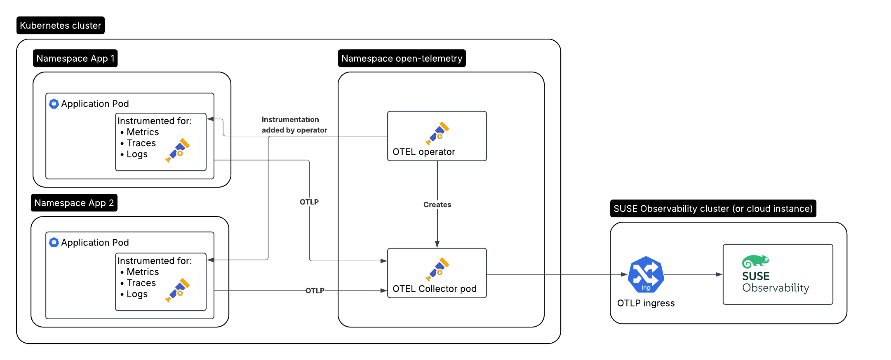

|
Este documento ha sido traducido utilizando tecnología de traducción automática. Si bien nos esforzamos por proporcionar traducciones precisas, no ofrecemos garantías sobre la integridad, precisión o confiabilidad del contenido traducido. En caso de discrepancia, la versión original en inglés prevalecerá y constituirá el texto autorizado. |
Primeros pasos con el operador OpenTelemetry en Kubernetes
Aquí está la configuración que vamos a crear, para una aplicación que necesita ser monitorizada:
-
La aplicación / carga de trabajo monitorizada que se ejecuta en el clúster A, auto-instrumentada por el operador OpenTelemetry
-
El operador OpenTelemetry en el clúster A
-
Un colector creado por el operador
-
SUSE Observability ejecutándose en el clúster B, o SUSE Cloud Observability

Instalar el operador
El operador OpenTelemetry ofrece algunas características adicionales sobre la configuración normal de Kubernetes:
-
Puede auto-instrumentar los pods de tu aplicación para los lenguajes soportados (Java, .NET, Python, Golang, Node.js), sin necesidad de modificar las aplicaciones o las imágenes de Docker en absoluto
-
Puede ser utilizado como un reemplazo del operador Prometheus y comenzar a recopilar datos de los puntos finales del exportador de Prometheus basándose en los monitores de servicio y pod
Crear un token de servicio
Hay dos maneras de crear un token de servicio:
-
SUSE Observability UI - abre el menú principal haciendo clic en la parte superior izquierda de la pantalla y ve a
StackPacks>Open Telemetry. Si no lo has hecho antes, haz clic en el botónINSTALL. Haz clic en el botónCREATE NEW SERVICE TOKENy copia el valor en tu portapapeles. -
SUSE Observability CLI - ver Gestionar tokens de servicio
El valor del token de servicio debe ser utilizado donde las instrucciones a continuación mencionan <SERVICE_TOKEN>.
Crear el espacio de nombres y un secreto para el token de servicio
Instalaremos en el espacio de nombres open-telemetry y utilizaremos el token de servicio:
kubectl create namespace open-telemetry
kubectl create secret generic open-telemetry-collector \
--namespace open-telemetry \
--from-literal=API_KEY='<SERVICE_TOKEN>'Configurar e instalar el operador
El operador se instala con un chart de Helm, así que primero configura el repositorio del chart.
helm repo add open-telemetry https://open-telemetry.github.io/opentelemetry-helm-chartsVamos a crear un archivo otel-operator.yaml para configurar el operador:
# Add image pull secret for private registries
imagePullSecrets: []
manager:
image:
# Uses chart.appVersion for the tag
repository: ghcr.io/open-telemetry/opentelemetry-operator/opentelemetry-operator
collectorImage:
# find the latest collector releases at https://github.com/open-telemetry/opentelemetry-collector-releases/releases
repository: otel/opentelemetry-collector-k8s
tag: 0.123.0
targetAllocatorImage:
repository: ""
tag: ""
# Only needed when overriding the image repository, make sure to always specify both the image and tag:
autoInstrumentationImage:
java:
repository: ""
tag: ""
nodejs:
repository: ""
tag: ""
python:
repository: ""
tag: ""
dotnet:
repository: ""
tag: ""
# The Go instrumentation support in the operator is disabled by default.
# To enable it, use the operator.autoinstrumentation.go feature gate.
go:
repository: ""
tag: ""
admissionWebhooks:
# A production setup should use certManager to generate the certificate, without certmanager the certificate will be generated during the Helm install
certManager:
enabled: false
# The operator has validation and mutation hooks that need a certificate, with this we generate that automatically
autoGenerateCert:
enabled: trueAhora instala el colector, utilizando el archivo de configuración:
helm upgrade --install opentelemetry-operator open-telemetry/opentelemetry-operator \
--namespace open-telemetry \
--values otel-operator.yamlEsto solo instala el operador. Continúa instalando el colector y habilita la auto-instrumentación.
El colector de OpenTelemetry
El operador gestiona uno o más despliegues de colectores a través de un recurso personalizado de Kubernetes de tipo OpenTelemetryCollector. Crearemos uno utilizando la misma configuración que se usó en la guía de inicio de Kubernetes.
Utiliza el secreto creado anteriormente en la guía. Asegúrate de reemplazar <otlp-suse-observability-endpoint:port> con tu endpoint OTLP (consulta API OTLP para tu endpoint) e inserta el nombre de tu clúster de Kubernetes en lugar de <your-cluster-name>:
apiVersion: opentelemetry.io/v1beta1
kind: OpenTelemetryCollector
metadata:
name: otel-collector
spec:
mode: deployment
envFrom:
- secretRef:
name: open-telemetry-collector
# optional service-account for pulling the collector image from a private registries
# serviceAccount: otel-collector
config:
receivers:
otlp:
protocols:
grpc:
endpoint: 0.0.0.0:4317
http:
endpoint: 0.0.0.0:4318
# Scrape the collectors own metrics
prometheus:
config:
scrape_configs:
- job_name: opentelemetry-collector
scrape_interval: 10s
static_configs:
- targets:
- ${env:MY_POD_IP}:8888
extensions:
health_check:
endpoint: ${env:MY_POD_IP}:13133
# Use the API key from the env for authentication
bearertokenauth:
scheme: SUSEObservability
token: "${env:API_KEY}"
exporters:
debug: {}
nop: {}
otlp/suse-observability:
auth:
authenticator: bearertokenauth
# Put in your own otlp endpoint, for example otlp-suse-observability.my.company.com:443
endpoint: <otlp-suse-observability-endpoint:port>
compression: snappy
processors:
memory_limiter:
check_interval: 5s
limit_percentage: 80
spike_limit_percentage: 25
batch: {}
resource:
attributes:
- key: k8s.cluster.name
action: upsert
# Insert your own cluster name
value: <your-cluster-name>
- key: service.instance.id
from_attribute: k8s.pod.uid
action: insert
# Use the k8s namespace also as the open telemetry namespace
- key: service.namespace
from_attribute: k8s.namespace.name
action: insert
connectors:
# Generate metrics for spans
spanmetrics:
metrics_expiration: 5m
namespace: otel_span
service:
extensions: [ health_check, bearertokenauth ]
pipelines:
traces:
receivers: [otlp]
processors: [memory_limiter, resource, batch]
exporters: [debug, spanmetrics, otlp/suse-observability]
metrics:
receivers: [otlp, spanmetrics, prometheus]
processors: [memory_limiter, resource, batch]
exporters: [debug, otlp/suse-observability]
logs:
receivers: [otlp]
processors: []
exporters: [nop]
telemetry:
metrics:
address: ${env:MY_POD_IP}:8888|
Usa el mismo nombre de clúster que se utilizó para instalar el agente de SUSE Observability si también usas el agente de SUSE Observability con el stackpack de Kubernetes. Usar un nombre de clúster diferente resultará en una perspectiva de trazas vacía para los componentes de Kubernetes y, en general, hará que correlacionar información sea mucho más difícil para SUSE Observability y tus usuarios. |
Ahora aplica este collector.yaml en el espacio de nombres open-telemetry para desplegar un colector:
kubectl apply --namespace open-telemetry -f collector.yamlEl colector ofrece muchos más receptores, procesadores y exportadores de configuración; para más detalles, consulta nuestra página del colector. Para uso en producción, a menudo se generan grandes cantidades de "spans" y querrás comenzar a configurar muestreo.
Auto-instrumentación
Configurar auto-instrumentación
Ahora necesitamos decirle al operador cómo configurar la auto-instrumentación para los diferentes lenguajes utilizando otro recurso personalizado, de tipo Instrumentation. Se utiliza principalmente para configurar el colector que se acaba de desplegar como el punto final de telemetría para las aplicaciones instrumentadas.
Se puede definir en un solo lugar y ser utilizado por todos los pods en el clúster, pero también es posible tener un Instrumentation diferente en cada espacio de nombres. Haremos lo primero aquí. Ten en cuenta que si utilizaste un espacio de nombres diferente o un nombre diferente para el colector otel, el punto final en este archivo necesita ser actualizado en consecuencia.
Crea un instrumentation.yaml:
apiVersion: opentelemetry.io/v1alpha1
kind: Instrumentation
metadata:
name: otel-instrumentation
spec:
exporter:
# default endpoint for the instrumentation
endpoint: http://otel-collector-collector.open-telemetry.svc.cluster.local:4317
propagators:
- tracecontext
- baggage
defaults:
# To use the standard app.kubernetes.io/ labels for the service name, version and namespace:
useLabelsForResourceAttributes: true
python:
env:
# Python autoinstrumentation uses http/proto by default, so data must be sent to 4318 instead of 4317.
- name: OTEL_EXPORTER_OTLP_ENDPOINT
value: http://otel-collector-collector.open-telemetry.svc.cluster.local:4318
dotnet:
env:
# Dotnet autoinstrumentation uses http/proto by default, so data must be sent to 4318 instead of 4317.
- name: OTEL_EXPORTER_OTLP_ENDPOINT
value: http://otel-collector-collector.open-telemetry.svc.cluster.local:4318
go:
env:
# Go autoinstrumentation uses http/proto by default, so data must be sent to 4318 instead of 4317.
- name: OTEL_EXPORTER_OTLP_ENDPOINT
value: http://otel-collector-collector.open-telemetry.svc.cluster.local:4318Ahora aplica el instrumentation.yaml también en el espacio de nombres open-telemetry:
kubectl apply --namespace open-telemetry -f instrumentation.yamlHabilitar la auto-instrumentación para un pod
Para instruir al operador para que auto-instrumente tus pods de aplicación, necesitamos añadir una anotación al pod:
-
Java:
instrumentation.opentelemetry.io/inject-java: open-telemetry/otel-instrumentation -
NodeJS:
instrumentation.opentelemetry.io/inject-nodejs: open-telemetry/otel-instrumentation -
Python:
instrumentation.opentelemetry.io/inject-python: open-telemetry/otel-instrumentation -
Go:
instrumentation.opentelemetry.io/inject-go: open-telemetry/otel-instrumentation
Ten en cuenta que el valor de la anotación se refiere al espacio de nombres y al nombre del recurso Instrumentation que creamos. Otras opciones son:
-
"true" - inyectar y
Instrumentationrecurso personalizado desde el espacio de nombres. -
"my-instrumentation" - nombre del recurso personalizado
Instrumentationen el espacio de nombres actual. -
"my-other-namespace/my-instrumentation" - espacio de nombres y nombre del recurso personalizado
Instrumentationen otro espacio de nombres. -
"false" - no inyectar
Cuando se crea un pod con una de las anotaciones, el operador modifica el pod a través de un gancho de mutación:
-
Añade un contenedor de inicialización que proporciona la biblioteca de auto-instrumentación
-
Modifica el primer contenedor del pod para cargar la instrumentación durante el inicio y añade variables de entorno para configurar la instrumentación
Si necesitas personalizar qué contenedores deben ser instrumentados, utiliza la documentación del operador.
|
La auto-instrumentación de Go requiere permisos elevados. Estos permisos se establecen automáticamente por el operador: |
Ver los resultados
Ve a SUSE Observability y asegúrate de que el Stackpack de Open Telemetry esté instalado (a través del menú principal -> Stackpacks).
Después de un corto periodo y si tus pods están recibiendo algo de tráfico, deberías poder encontrarlos bajo su nombre de servicio en las vistas de Open Telemetry -> servicios e instancias de servicio. Las trazas aparecerán en el explorador de trazas y en la perspectiva de trazas para los componentes de servicio e instancia de servicio. Las métricas de span y las métricas específicas del lenguaje (si están disponibles) estarán disponibles en la perspectiva de métricas para los componentes.
Si también tienes instalado el stackpack de Kubernetes, los pods instrumentados también tendrán las trazas disponibles en la perspectiva de trazas.
Rancher RBAC
Para que Rancher RBAC funcione, los datos de telemetría necesitan tener los siguientes atributos de recurso presentes:
-
k8s.cluster.name- el nombre del Cluster tal como se utiliza en el stackpack de Kubernetes -
k8s.namespace.name- un Namespace gestionado por un Proyecto de Rancher
El Operador de Kubernetes inyectará estos atributos por defecto en cualquier dato de telemetría que se envíe.
Pasos siguientes
Puedes añadir nuevos gráficos a los componentes, por ejemplo, el servicio o la instancia de servicio, para tu aplicación, siguiendo nuestra guía. También es posible crear nuevos monitores utilizando las métricas y configurar notificaciones para ser avisado cuando tu aplicación no esté disponible o tenga problemas de rendimiento.
El operador, el OpenTelemetryCollector y el recurso personalizado Instrumentation, tienen más opciones que están documentadas en el readme del repositorio del operador. Por ejemplo, es posible instalar un asignador de destino opcional a través del recurso OpenTelemetryCollector, que se puede utilizar para configurar el receptor de Prometheus del colector. Esto es especialmente útil cuando deseas reemplazar el operador de Prometheus y estás utilizando sus recursos personalizados ServiceMonitor y PodMonitor.